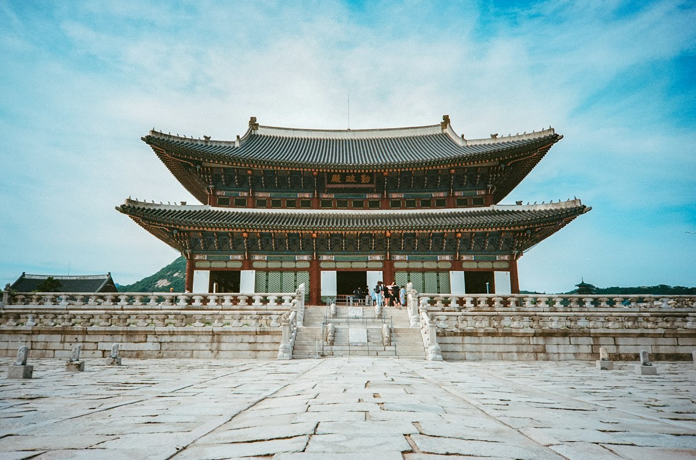

1
Gyeongbokgung Palace
Seoul
The largest royal palace of the Joseon Dynasty, built in 1395. Walk through the big gates and see the beautiful wooden buildings with the mountains behind them. If you wear a hanbok, you can enter for free!
Tip: Watch the Royal Guard Changing Ceremony at the main gate.
